Living with Regular Infusions
Around the world, hundreds of millions of people are living with chronic diseases that require regular intravenous (IV) or subcutaneous infusions. Even ignoring complications of these drugs, the infusion process is burdensome to patients;
- Depending on healthcare professionals to administer the treatment makes the patient’s health less private,
- Commuting to a clinic can be extremely challenging, especially for patients who live in healthcare deserts, and
- Regular infusions require patients to miss work, family events, or other important commitments for the sake of their health.
Solution Space: Wearables
Large-volume on-body delivery systems (OBDSs), wearable medical devices capable of administering large volumes (up to 10 mL) of liquid drugs over long durations (up to 6 hours) aim to relieve many of the challenges of traditional drug infusions.
However, even as more OBDS products (like the YpsoDose®, Neulasta® Onpro®, and enFuse® pictured to the right) enter the market, they suffer from several key issues:
- Most are single-use, requiring careful disposal due to their hypodermic needles inside, and leading to significant sustainability concerns.
- Many have limited drug reservoir capacities (< 10 mL).
- Even with significant instruction from healthcare providers, users are uncomfortable administering their own infusions.
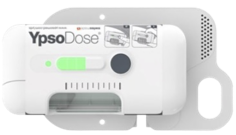
Ypsodose® [cred: ondrugdelivery.com]
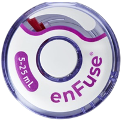
enFuse® [cred: enableinjections.com]
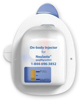
Neulasta® Onpro® [cred: neulasta.com]
The Solution: HALŌ
Read the full HALŌ design research case study here.
The HALŌ is an eco-driven, partly-reusable large-volume dosing solution. More importantly, it’s built from the bottom up with lived user experiences in mind.
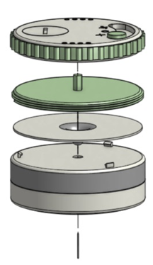
The HALŌ prioritizes simplicity in its user interaction, with just a three-state slider and an ergonomic, one-handed twistable ring for adjusting the administration rate and status.
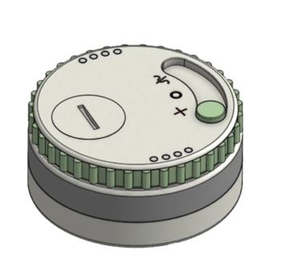
One of the most unsettling aspects of clinic-based infusions is the lack of visibility into the process. The HALŌ addresses this by providing a clear window into the drug reservoir and a simple LED indicator (powered by a 650 mAh CR2450 battery) to show the user the current status of their infusion.
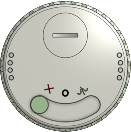
The HALŌ is designed to be worn on the upper arm, with a low-profile form factor (7 cm diameter, 3.4 cm height) that can be easily concealed under clothing.
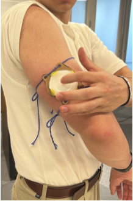
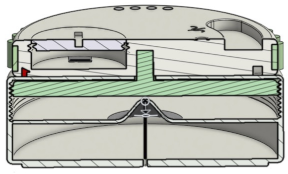
Cross section of the HALŌ; plunger in green, elastomer dome for needle deployment in grey.
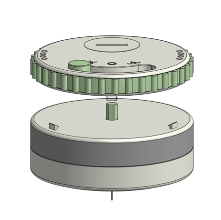
The upper section of the HALŌ is reusable and battery-powered, and contains all of the electronics necessary to control the infusion. The lower section is disposable and contains the drug reservoir and hypodermic needle.
My Contributions
Complete Physical Product Design
After each round of user interviews, I added and modified HALŌ geometry to depict the device in its truest form. This included using OnShape CAD to sculpt each component and visualize relative sizing of important parts, like the 25-gauge hypodermic needle.
Interview Guide Preparation
I wrote interview guides that gathered invaluable knowledge from healthcare professionals and patients while valuing them as people, not just research subjects.
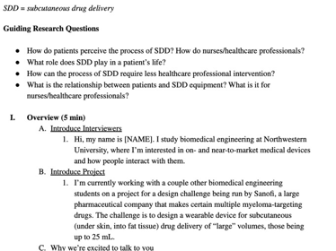
User/Design Research Interviews
I conducted several interviews each with four different users to gather ideas, feedback, and opinions throughout the entire design process.
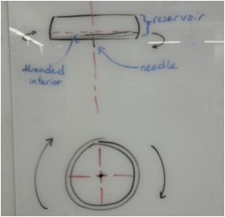